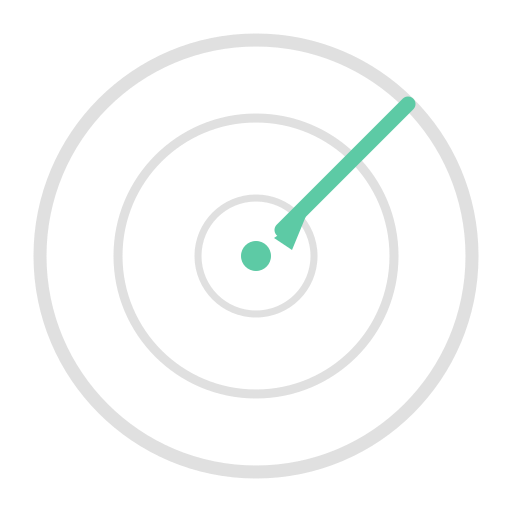

AgentryDefine AI agent workflows once.
Run them identically on your laptop and in CI.
github.com/norrietaylor/agentry — Apache 2.0
agent:
runtime: claude-code
model: claude-sonnet-4-20250514
system_prompt: prompts/review.md
tools:
capabilities:
- repository:read
safety:
trust: sandboxed
resources:
timeout: 300Same file → agentry run locally
Same file → agentry ci generate for CI
Agentry never makes direct LLM API calls.
Runners own the environment. Agents own the intelligence.
Tool manifest enforcement. Agents only access declared capabilities. repository:read means no writes.
Docker containers with CPU/memory limits, read-only mounts, non-root user, DNS-based egress filtering.
Ed25519 signatures over safety blocks. Security audit diffs between workflow versions. Preflight checks before execution.
--node$ agentry ci generate --target github workflows/code-review.yaml| Tool | Permission |
|---|---|
repository:read | contents: read |
pr:comment | pull-requests: write |
pr:review | pull-requests: write |
issue:create | issues: write |
Agentry developing itself.
$ agentry run workflows/develop.yaml \
--input spec=docs/specs/07-spec-feature.mdFull development lifecycle as a composed workflow. No external plugins.
Implement AgentProtocol, register in AgentRegistry. One protocol, one registration.
class MyAgent:
def execute(self,
task: AgentTask
) -> AgentResult: ...
def check_available(self)
-> AgentStatus: ...Implement EnvironmentBinder. Entry-point based discovery.
# pyproject.toml
[project.entry-points.
"agentry.binders"]
gitlab =
"my_pkg:GitLabBinder"Planned GitLab CI, Jenkins
Open source · Apache 2.0 · Python 3.10+
github.com/norrietaylor/agentry